Bereits jede zweiteLehrkraft hat KIfür die Schule genutzt
Aus der Presse kommende Information
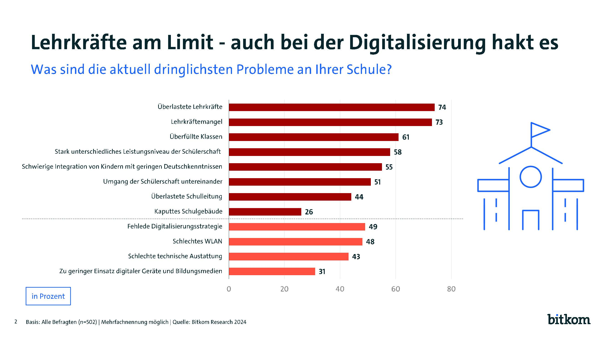
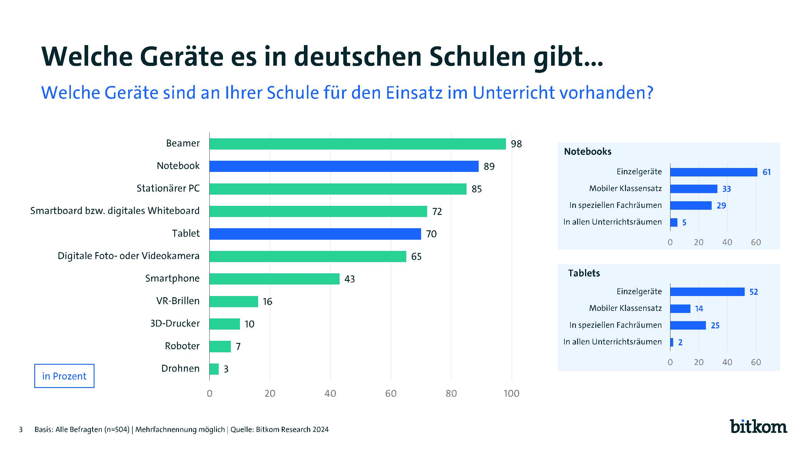
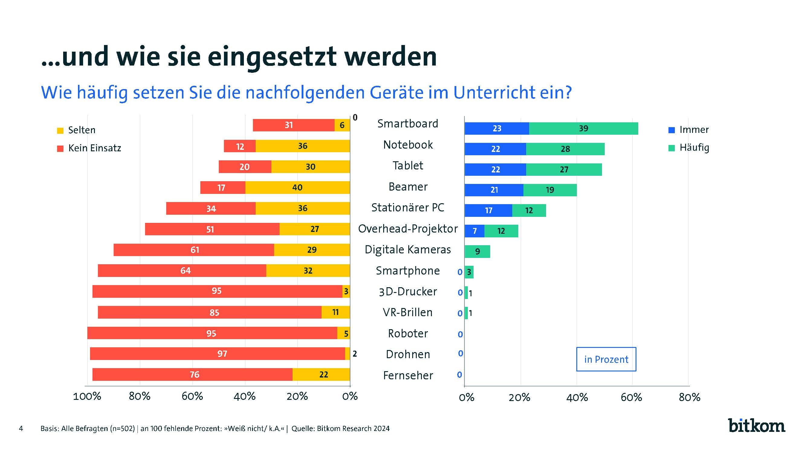
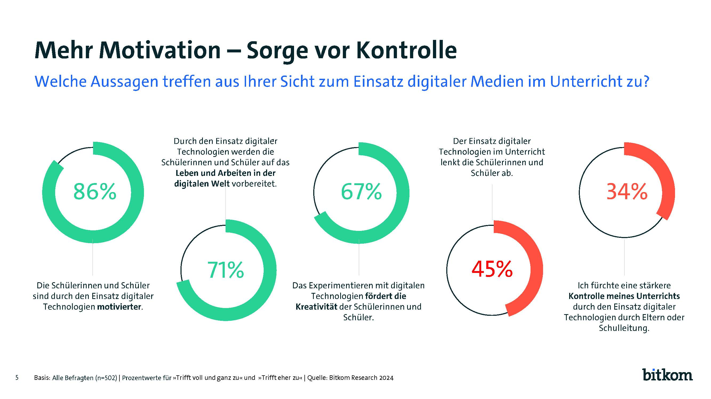
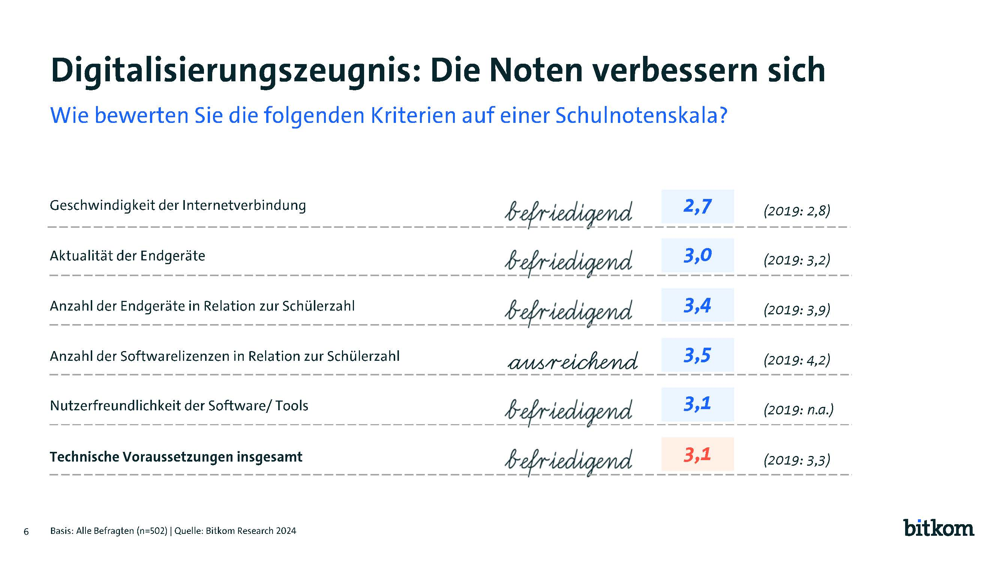
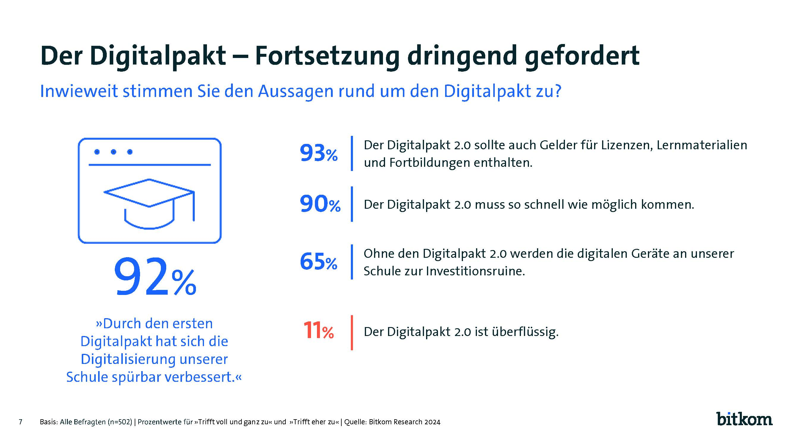
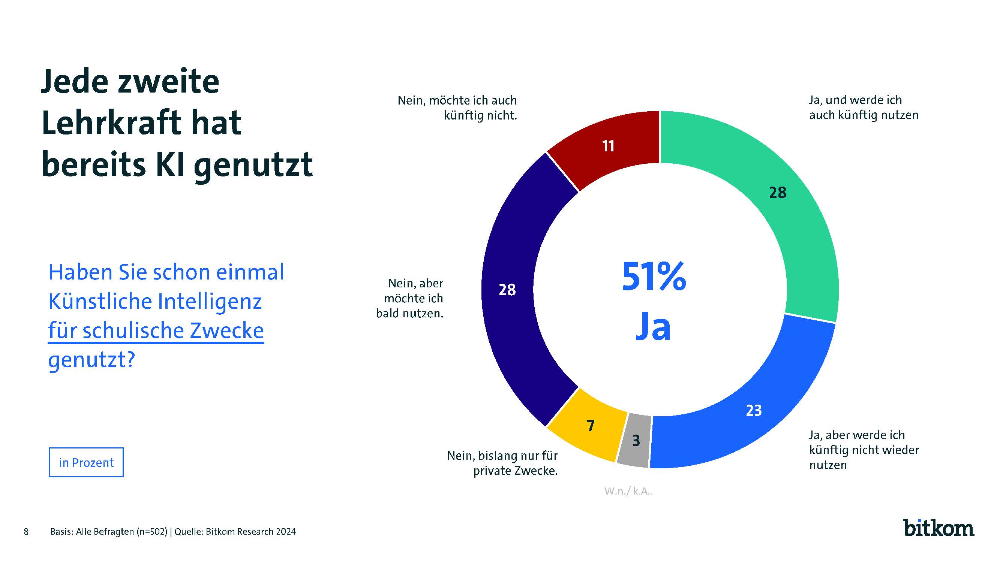
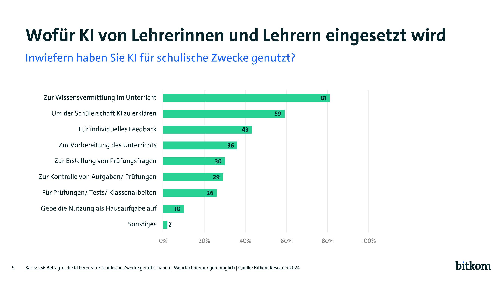
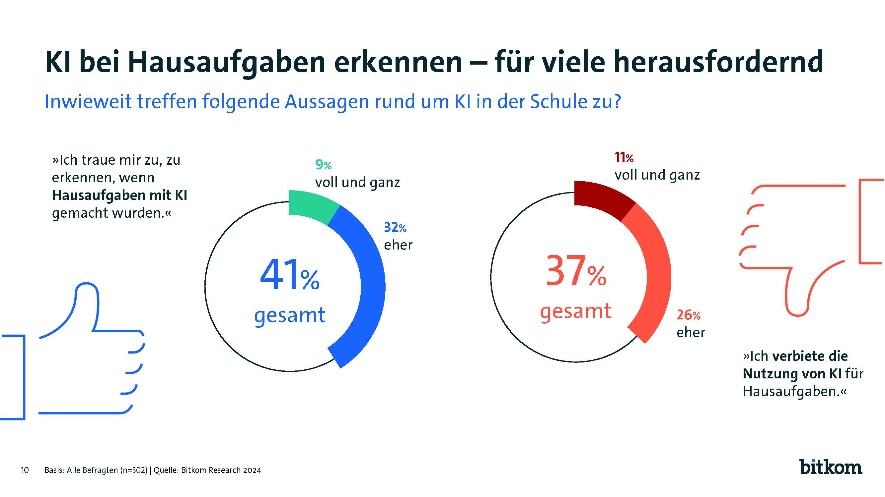
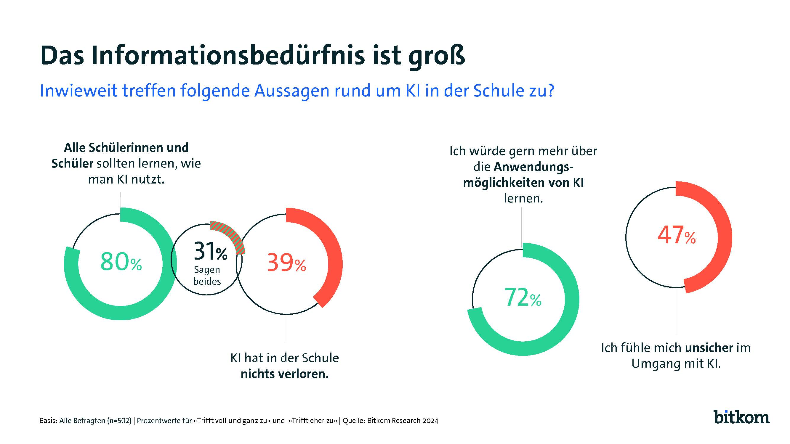
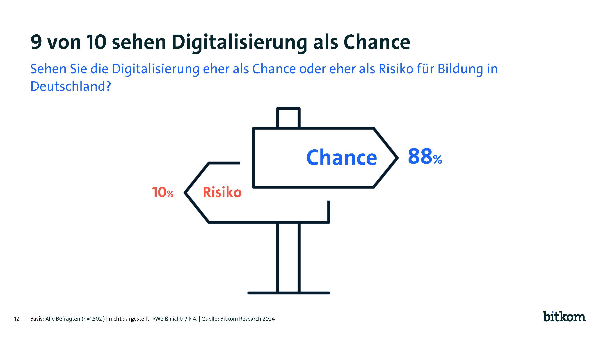
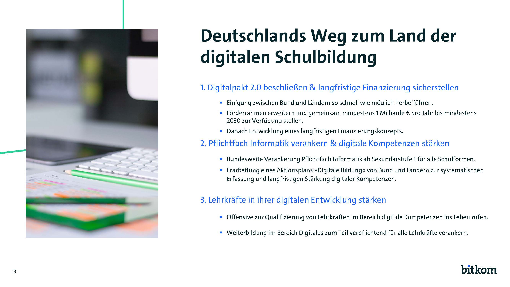
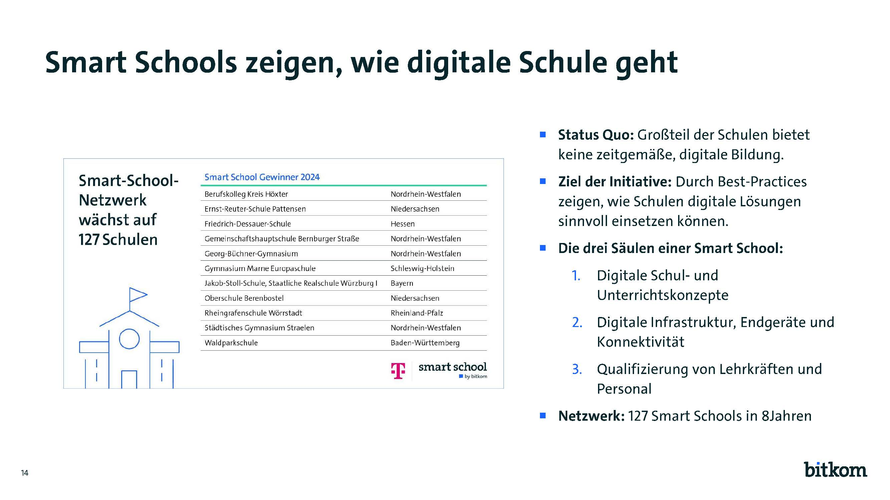
Einsatz für Wissensvermittlung, Prüfungsvorbereitung oder Hausaufgaben
Bei vielen Lehrerinnen und Lehrern herrscht aber große Unsicherheit im Umgang
mit KI
Digitalisierung der Schulen kommt voran: Notebooks werden zum Standard, aber
fast jede zweite Lehrkraft setzt noch Overhead-Projektoren ein
90 Prozent fordern schnellstmöglich einen Digitalpakt 2.0
Berlin, 09. Oktober 2024 – Neue Deutsch-Aufgaben entwickeln, Elternbriefe
verfassen, ganze Unterrichtsstunden planen – viele Lehrerinnen und Lehrer nutzen
Künstliche Intelligenz für schulische Zwecke. So haben bereits 51 Prozent
Erfahrungen etwa mit Anwendungen wie ChatGPT, SchulKI, FieteAI in schulischem
Kontext gesammelt: 28 Prozent werden dies auch künftig tun, 23 Prozent haben
entsprechende Tools zwar schon für den Unterricht ausprobiert, wollen sie aber
nicht wieder nutzen. Auch darüber hinaus ist das Interesse der Lehrenden an KI
groß: So haben weitere 28 Prozent KI für den Unterricht noch nicht ausprobiert,
wollen dies aber bald tun. 7 Prozent haben KI bislang nur für private
Zwecke genutzt. Lediglich jede zehnte Lehrkraft (11 Prozent) schließt den
KI-Einsatz kategorisch aus. Das sind Ergebnisse einer repräsentativen Befragung
unter 502 Lehrerinnen und Lehrern der Sekundarstufen I und II in Deutschland,
die im Auftrag des Digitalverbands Bitkom durchgeführt wurde. „KI ist eine der
wichtigsten Zukunftstechnologien. KI eröffnet neue Chancen für das Lehren und
Lernen“, sagt Bitkom-Hauptgeschäftsführer Dr. Bernhard Rohleder.
Wofür KI von Lehrerinnen und Lehrer eingesetzt wird
Inwiefern haben KI für Schulische Zwecke genutzt?
Basis: 256 Befragte, die KI bereits für die Schulische Zwecke genutzt haben Tresor |
Mehrfachnennungen möglich | Quelle: Bitkom Research 2024
37 Prozent haben KI-Nutzung für Hausaufgaben verboten
Lehrerinnen und Lehrer fordern schnellen Digitalpakt 2.0
Wie steht es insgesamt um die Digitalisierung von Deutschlands Schulen? 92
Prozent der Lehrerinnen und Lehrer sehen spürbare Verbesserungen durch den
Digitalpakt Schule, der zwischen Mai 2019 und 2024 Gelder für die
Digitalisierung der Schulen bereitgestellt hat, etwa für die Ausstattung mit
WLAN, Tablets oder Computern und für die Netzwerkadministration. 90 Prozent
fordern daher auch eine möglichst schnelle Anschlussfinanzierung, 93 Prozent
fordern, ein Digitalpakt 2.0 müsse auch Gelder für Lizenzen, Lernmaterialien und
Fortbildungen enthalten. Rohleder: „Trotz Verankerung im Koalitionsvertrag hat
die Bundesregierung den Digitalpakt 2.0 bislang nicht auf die Beine gestellt.
Durch die fehlende Anschlussfinanzierung werden Schulen und Kommunen bei Betrieb
und Verwaltung bestehender digitaler Infrastruktur allein gelassen. Ihnen fehlen
Planungssicherheit und Perspektive, wie digitales Lehren langfristig ermöglicht
und weiterentwickelt werden soll. Hard- und Software muss aktuell gehalten und
Sicherheitslücken müssen geschlossen werden.“ Fast zwei Drittel (65 Prozent) der
Lehrerinnen und Lehrer sehen die Gefahr, dass die digitalen Geräte an ihrer
Schule ohne Anschlussfinanzierung zur Investitionsruine werden. Lediglich 12
Prozent halten einen Digitalpakt 2.0 für überflüssig. „Bund und Länder müssen
sich schnell auf ein tragfähiges Konzept für den Digitalpakt 2.0 einigen“,
betont Bitkom-Hauptgeschäftsführer Dr. Bernhard Rohleder.
Beamer und Notebooks sind Standard, 3D-Drucker an jeder
zehnten Schule
Viele Schulen verfügen bereits über eine digitale Grundausstattung. Beamer (98
Prozent) sind in praktisch allen Schulen vorhanden, 89 Prozent verfügen außerdem
über Notebooks, wobei diese an jeder dritten Schule als kompletter Klassensatz
vorhanden sind (33 Prozent), mindestens jedoch als Einzelgeräte (61 Prozent)
oder in speziellen Fachräumen (29 Prozent). Jede zwanzigste Schule (5 Prozent)
stellt Notebooks in allen Unterrichtsräumen zur Verfügung. 85 Prozent der
Schulen haben stationäre PCs im Einsatz, drei Viertel (72 Prozent) interaktive
Whiteboards bzw. digitale Smartboards, also elektronische Tafeln mit
Bildschirmsteuerung. In 7 von 10 Schulen gibt es Tablets, allerdings sind in
diesem Fall vor allem Einzelgeräte im Einsatz (52 Prozent). 14 Prozent der
Schulen verfügen über Tablets als mobilen Klassensatz und 25 Prozent bieten die
Geräte in speziellen Fachräumen an. Nur 2 Prozent der Schulen in Deutschland
haben alle Unterrichtsräume mit Tablets ausgestattet. 65 Prozent der Schulen
bieten ihren Schülerinnen und Schülern die Arbeit mit Foto- und Videokameras an
und 43 Prozent verfügen über Smartphones, die für den Unterricht eingesetzt
werden können. Seltener sind hingegen Virtual-Reality-Brillen (16 Prozent),
3D-Drucker (10 Prozent), Roboter (7 Prozent) und Drohnen (3 Prozent) an
deutschen Schulen zu finden.
Fast die Hälfte nutzt im Unterricht noch den Overhead-Projektor
Wie häufig werden die entsprechenden Geräte von Lehrerinnen und Lehrern im
Unterricht genutzt? Vor allem das interaktive Smartboard wird oft verwendet, 62
Prozent haben es immer oder häufig im Einsatz, 6 Prozent selten. Die Hälfte der
Lehrerinnen und Lehrer (50 Prozent) setzt immer bzw. häufig Notebooks im
Unterricht ein, 36 Prozent tun dies selten. Knapp dahinter folgen Tablets, die
49 Prozent immer bzw. häufig und 30 Prozent selten nutzen. 40 Prozent verwenden
Beamer immer oder häufig im Unterricht, weitere 40 Prozent tun dies selten. Der
Overhead-Projektor, ein Relikt aus vordigitalen Zeiten, ist ebenfalls noch
vielfach im Klassenzimmer zu finden: Ein Fünftel der Lehrerinnen und Lehrer (19
Prozent) nutzt immer bzw. häufig den Overhead-Projektor, 27 Prozent tun dies
selten. Smartphones werden nur von einer Minderheit von 3 Prozent der
Lehrerinnen und Lehrer häufig oder immer im Unterricht genutzt, ein Drittel (32
Prozent) setzt die Geräte zumindest hin und wieder ein. „Smartphones sind für
viele Kinder und Jugendliche fester Teil ihres Alltags. Der verantwortungsvolle
Umgang sollte ebenso wie Medienkompetenz selbstverständlich Inhalt des
Unterrichts sein und in jeder Jahrgangsstufe vermittelt werden“, betont
Bitkom-Hauptgeschäftsführer Dr. Bernhard Rohleder. „Debatten um pauschale
Handyverbote sind wirklichkeitsfremd und führen an der Lebensrealität der jungen
Menschen vorbei.“
Mehr Motivation im Klassenzimmer – aber auch die Gefahr von Ablenkung
Den Einsatz digitaler Technologien im Unterricht sieht die Lehrerschaft
zwiegespalten. Auf der einen Seite erkennt die weit überwiegende Mehrheit einige
Vorteile: Die Schülerinnen und Schüler seien motivierter (86 Prozent) und würden
auf das Leben und Arbeiten in der digitalen Welt vorbereitet (71 Prozent), das
Experimentieren mit digitalen Technologien fördere außerdem die Kreativität der
Schülerinnen und Schüler (67 Prozent). Auf der anderen Seite erkennen einige
Lehrerinnen und Lehrer auch Nachteile. 45 Prozent sehen Schülerinnen und Schüler
durch digitale Technologien im Unterricht abgelenkt. 34 Prozent fürchten eine
stärkere Kontrolle durch Eltern oder Schulleitung durch den Einsatz der Geräte
und Anwendungen.
Das Zeugnis, das die befragten Lehrerinnen und Lehrer ihrer Schule in
Digitalfragen ausstellen, ist zwar insgesamt mittelmäßig und hat sich im
Vergleich zu einer Bitkom-Studie aus dem Jahr 2019 nur leicht verbessert –
gleichwohl dürften die Anforderungen der Lehrerschaft an die technische
Ausstattung ihrer Schulen im gleichen Zeitraum auch deutlich gestiegen sein. Die
technischen Voraussetzungen insgesamt werden auf der Schulnotenskala gerade mit
„befriedigend“ (3,1) bewertet – vor fünf Jahren betrug die Durchschnittsnote
3,3. Am besten schneiden die Geschwindigkeit der Internetverbindung – Note 2,7
(2019: 2,8) – und die Aktualität der Endgeräte mit einer 3,0 (2019: 3,2) ab. Die
größten Verbesserungen gibt es bei der Ausstattung mit Endgeräten und Software –
auf einem allerdings weiterhin niedrigen Niveau: So hat sich die Note für die
Verfügbarkeit von Softwarelizenzen in Relation zur Schülerzahl um 0,7
Notenpunkte von 4,2 im Jahr 2019 auf jetzt 3,5 verbessert. Die Bewertung der
Anzahl der Endgeräte in Relation zur Schülerzahl verbesserte sich um eine halbe
Notenstufe von 3,9 im Jahr 2019 auf nun 3,4. Diese beiden Kategorien werden
gleichwohl weiterhin am schlechtesten bewertet.
Überlastung der Lehrkräfte und Lehrermangel sind die größten
Probleme
Gefragt danach, was aktuell die größten Probleme an ihrer Schule sind, nennen
die Befragten vor allem die Überlastung der Lehrkräfte (74 Prozent), den
Lehrermangel (73 Prozent) sowie überfüllte Klassen (61 Prozent). Auch ein stark
unterschiedliches Leistungsniveau der Schülerinnen und Schüler (58 Prozent)
sowie eine schwierige Integration von Kindern mit geringen Deutschkenntnissen
(55 Prozent) macht den Lehrenden an deutschen Schulen zu schaffen. Jede vierte
Lehrkraft (26 Prozent) beklagt marode Schulgebäude. Die Digitalisierung ist
dabei nicht das drängendste, aber bei weitem auch nicht das geringste Problem:
Rund die Hälfte der Lehrerinnen und Lehrer (49 Prozent) moniert eine fehlende
Digitalisierungsstrategie ihrer Schule, 48 Prozent schlechtes Wlan und 43
Prozent eine schlechte technische Ausstattung. Rohleder: „Digitale Technologien
sind ein wichtiger Teil der Lösung vieler Probleme an deutschen Schulen: Sie
können u.a. überlastete Lehrkräfte unterstützen – nicht nur bei administrativen
Aufgaben, sondern auch bei der Gestaltung ihres Unterrichts. Gleichzeitig lernen
die Schülerinnen und Schüler bei ihrem Einsatz im Unterricht, sich Technologien
zunutze zu machen und sich selbstbewusster und sicherer in der digitalen Welt zu
bewegen.“
Dabei begreifen die Lehrerinnen und Lehrer die Digitalisierung größtenteils als
Chance (88 Prozent) für die Bildung in Deutschland. Nur 10 Prozent sehen in ihr
ein Risiko. Die Vermittlung digitaler Kompetenzen stellt für die Mehrheit der
Lehrkräfte eine entsprechend wichtige schulische Aufgabe dar – rund drei Viertel
(78 Prozent) sagen, dass digitale Kompetenzen ebenso selbstverständlich in der
Schule vermittelt werden sollten wie Rechnen oder Schreiben. „Die Lehrerinnen
und Lehrer sind der Digitalisierung gegenüber sehr aufgeschlossen. Die
Bildungspolitik in Bund und Ländern muss sie dabei bestmöglich unterstützen“,
betont Rohleder. Aus Bitkom-Sicht muss dafür vor allem der Digitalpakt 2.0
beschlossen und der bisherige Förderrahmen um die Finanzierung von digitalen
Lehr- und Lernmaterialien und Lehrerfortbildungen erweitert werden. Dafür
brauche es mindestens eine Milliarde Euro pro Jahr bis 2030. Daneben sei die
bundesweite Verankerung eines Pflichtfachs Informatik für alle Schulformen ab
Sekundarstufe 1 überfällig. „Schülerinnen und Schüler müssen systematisch an die
Informatik und digitalen Themen herangeführt werden und dort eigene Kompetenzen
erwerben“, so Bitkom-Hauptgeschäftsführer Dr. Bernhard Rohleder. Außerdem
brauche es eine Offensive zur Vermittlung digitaler Kompetenzen an Lehrkräfte.
Rohleder: „Wenn Deutschland zukunfts- und wettbewerbsfähig bleiben will,
brauchen wir eine zeitgemäße Bildung, die uns mit anderen Nationen auf Augenhöhe
bringt.“
Basis: Alle Befragten(n=502) | Quelle : Bitkom Research 2024
Nein, möchte ich auch künftig nicht
Nein, aber möchte ich bald nutzen
Nein, bislang nur für private Zwecke
Ja, aber werde ich künftig nicht wieder nutzen
Ja, und werde ich auch künftig nutzen
Bitkom zeichnet seit 2018 jedes Jahr digitale Vorreiterschulen als Smart Schools
aus. Diese verfügen über eine besonders gute digitale Infrastruktur, digitale
Curricula und digitalkompetente Lehrerinnen und Lehrer. Inzwischen umfasst das
Smart-School-Netzwerk 127 Vorreiterschulen –von Grundschulen über Gesamtschulen und
Gymnasien bis hin zu Berufsschulen, auch eine deutsche Auslandsschule im Silicon
Valley gehört dazu. Zweimal jährlich trifft sich das Netzwerk, um Best Practices
auszutauschen und aktuelle Herausforderungen zu diskutieren.Weitere Informationen
unter
www.bitkom.org/smart-school .
Grundlage der Angaben ist eine Umfrage, die
Bitkom Research im Auftrag des
Digitalverbands Bitkom durchgeführt hat. Dabei wurden 502 Lehrer der Sekundarstufe 1
und 2 an Hauptschulen, Schulen mit mehreren Bildungsgängen, Realschulen, Gymnasien,
integrierten Gesamtschulen und Waldorfschulen telefonisch befragt. Die Befragung
fand im Zeitraum von KW 23 bis KW 32 2024 statt. Die Umfrage ist repräsentativ.
„Quelle: veröffentlicht am 9. Oktober 2024 auf
www.bitkom.org.“